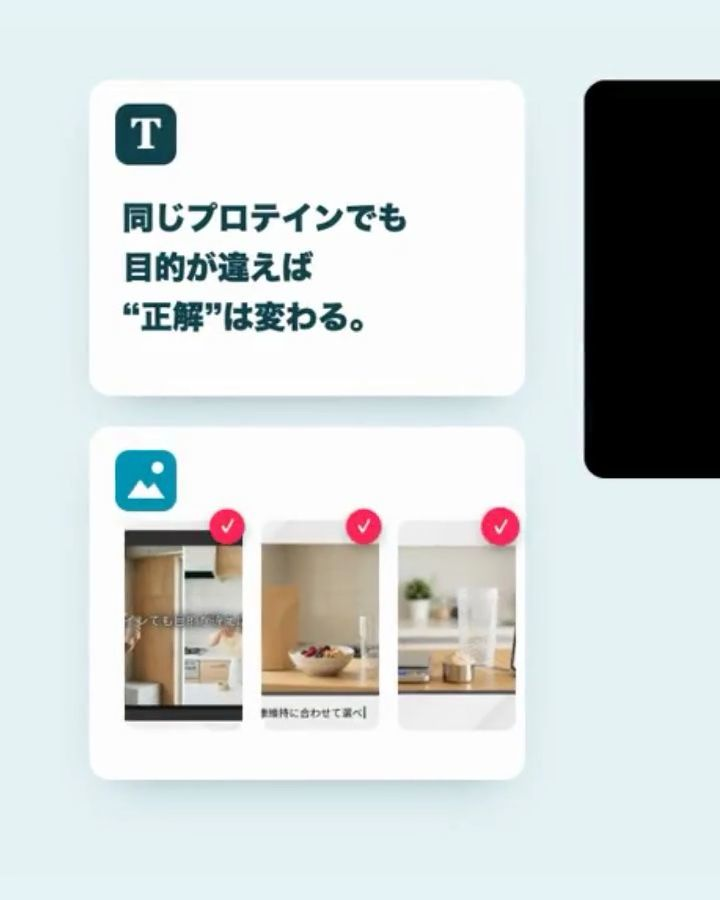
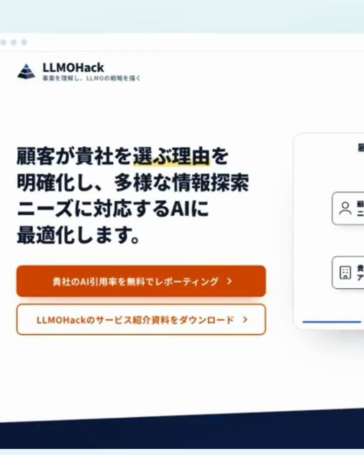

01 / 04
新規事業立ち上げ経験に基づくコミットメント
所属メンバーは新規事業における立て付けから立ち上げまでの経験を保有。企画フェーズにおける顧客とプロダクトの仮説設計から開発、マーケティング施策立案から各種クリエイティブ制作までを高品質かつワンストップで支援が可能です。
何が本質的なシグナルで

ストーリー
「誰かの役に立つ」という営みの中で、これまで人間が担ってきた“考えること”や“実行すること”の一部が、いま急速にAIへと置き換わりつつあります。変化の激しさが増し続けるこの時代において、マクロな視点では人間らしさを、ミクロな視点では自分らしさを保ちながら、どう生き残っていくべきか。私たちはその問いを日々考え続けています。

AIは高い合理性をもって答えを返しますが、一方、その合理性は、前提となるプロンプトや、使う人それぞれの立場や経験、価値観に大きく左右される構造にあります。つまり、ひとつの正解に収束するのではなく、無数の“もっともらしさ”が生まれ続け、エントロピー増大の法則が文字通り起きている時代に入ったと捉えています。

Web上でも、AIによって膨大な情報やコンテンツが生成される時代になりました。そうした環境のなかで重要になるのは、何が本質的なシグナルで、何が一時的なノイズなのかを見極める力だと考えています。
では、
年収・地位・資産など上下の相対比較で幸福度を測るゼロサムゲームと、成長・信頼・創造など一緒に何かに取り組むことで幸福が生まれるプラスサムゲームとの視点から様々な事象を捉えた際、創業時に掲げた「笑顔の総量の最大化」を軸に置くと判断基準は明確になると考えています。

短期的な個別最適ではなく、
ご興味をお持ちいただけた方はぜひご一報いただければ幸いです。
CONTACT →４つの特徴
所属メンバーは新規事業における立て付けから立ち上げまでの経験を保有。企画フェーズにおける顧客とプロダクトの仮説設計から開発、マーケティング施策立案から各種クリエイティブ制作までを高品質かつワンストップで支援が可能です。
海外生活経験が長く、英語・インドネシア語堪能なメンバーが複数在籍。顧客獲得のための各種クリエイティブ制作の他、営業資料作成から商談までを一貫して多言語で対応可能です。
医療・半導体・エネルギー・通信・SaaSなどのBtoB、教育・転職・ECなどのBtoCと、幅広い業種での事業企画・マーケティング支援の経験から、複雑な構造においても的確に理解・整理し、成果につながる戦略を立案します。
少数精鋭だから実現できるスピード感。幅広いケイパビリティを持つメンバーが少数でチームを運営。コミュニケーションコストが低く、タスクの所在を明確にしてスピーディーにプロジェクトを推進します。
事業内容
01
事業理解に基づいて戦略を考え、実行まで伴走し、ダッシュボード作成による経営層・上長への可視化まで対応。
詳しく見る
02動画広告の制作ツール
売れる動画広告をLPから5分で制作。
検証から成果改善まで、動画広告のPDCAに必要な機能を1ツールで網羅します。

03LP・サイト制作の代行
自社開発AIツール「HookHack」×インドネシアオフショアチーム×日本人ディレクターでLP・サイト制作を代行。
詳しく見る04
貴社の顧客理解に基づき、動画を企画・撮影・編集までワンストップで制作します。
詳しく見るメンバー
私たちのチームは、多様な世代やバックグラウンドを持つメンバーで構成されており、それぞれが自分の得意分野を生かして、常にお客様のニーズに応える最適なソリューションを提供することに尽力しています。少数精鋭のため、お客様と密接な関係を築くことを重視しており、信頼に基づく長期的なパートナーシップの構築を目指しています。お客様の世界進出への挑戦をサポートし、成功への道を共に歩んでいけることを願っています。

代表取締役
大手通信会社の営業、事業企画、およびWebコンサル会社での経験を生かし、様々な業種・規模の企業でBizDev・マーケティングのコンサルとして事業を推進。

プロジェクトマネージャー
東京生まれ、イギリス・シンガポール育ち。
映像ディレクターの経験を持ち、現在は弊社のオフショア開発事業と動画制作事業に加え、採用担当も務める。

インドネシア事業開発
インドネシア生まれ、グラズゴー大学卒業
SaaSを専門に構築を行い、複数のITベンチャーを立ち上げ。オフショア開発事業のエンジニア統括を担う。

人事・マーケティング担当
愛知生まれ、南米・東南アジア各国を放浪。
サムライスタイルでは人事全般・マーケティングを担当。ぶれない明るさが持ち味。